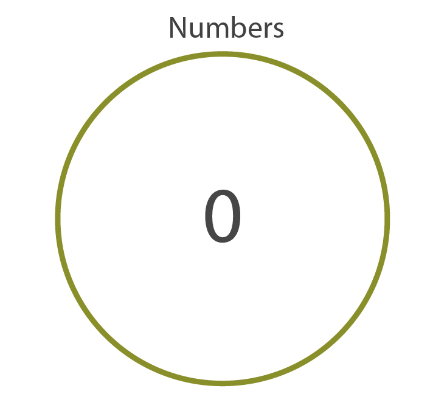
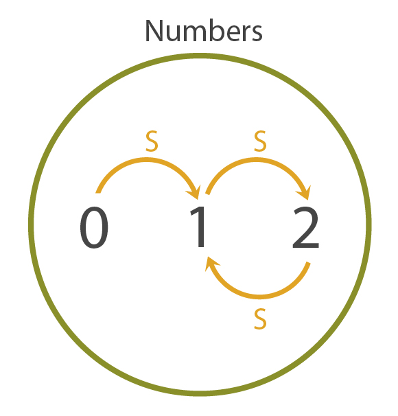
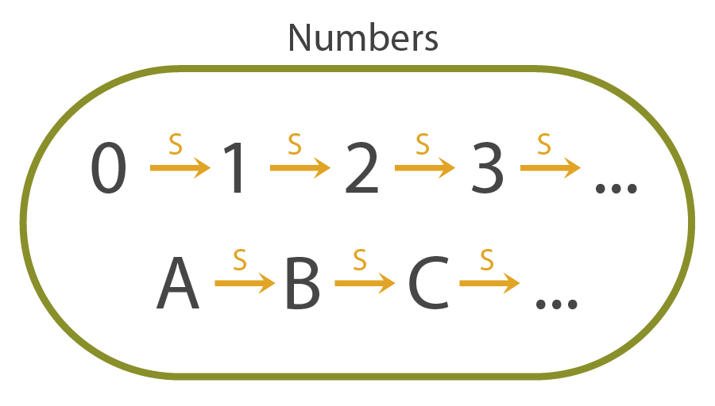
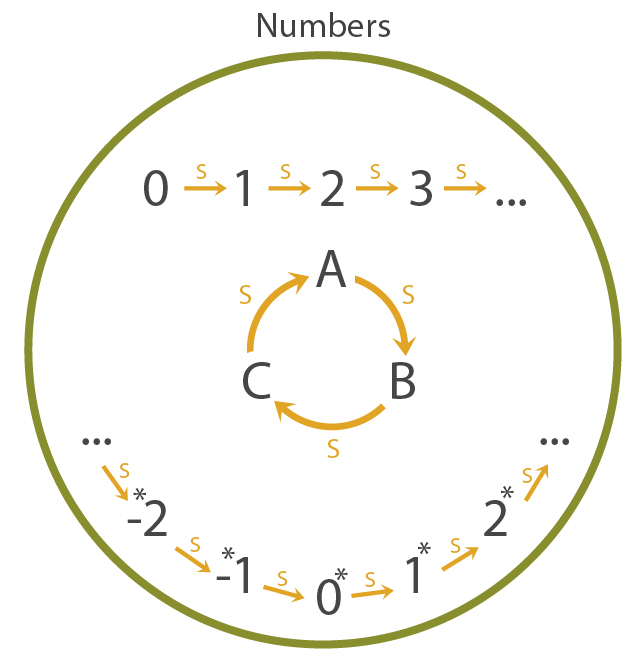
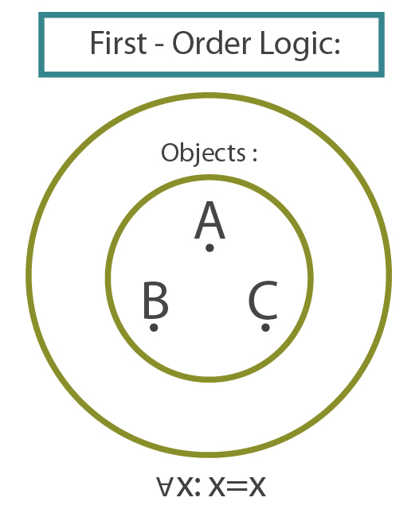
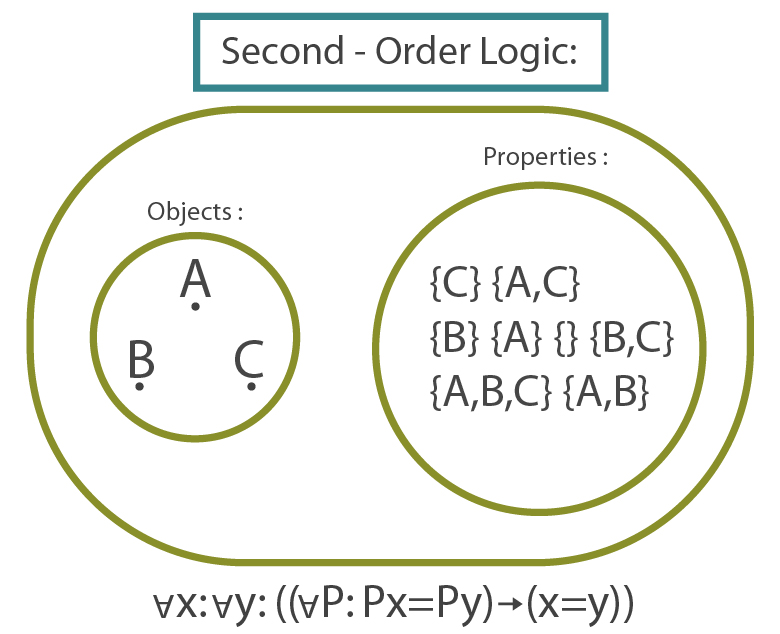
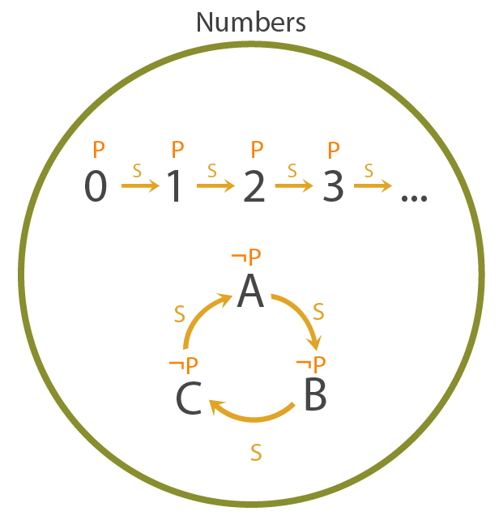

Followup to: Causal Reference [http://lesswrong.com/lw/f1u/causal_reference/], Proofs, Implications and Models [http://lesswrong.com/lw/f43/proofs_implications_and_models/]
The fact that one apple added to one apple invariably gives two apples helps in the teaching of arithmetic, but has no bearing on the truth of the proposition that 1 + 1 = 2.
-- James R. Newman, The World of Mathematics
Previous meditation 1: [http://lesswrong.com/lw/f1u/causal_reference/#7nyc] If we can only meaningfully talk about parts of the universe that can be pinned down by chains of cause and effect, where do we find the fact that 2 + 2 = 4? Or did I just make a meaningless noise, there? Or if you claim that "2 + 2 = 4"isn't meaningful or true, then what alternate property does the sentence "2 + 2 = 4" have which makes it so much more useful than the sentence "2 + 2 = 3"?
Previous meditation 2: [http://lesswrong.com/lw/f43/proofs_implications_and_models/#7ors] It has been claimed that logic and mathematics is the study of which conclusions follow from which premises. But when we say that 2 + 2 = 4, are we really just assuming that? It seems like 2 + 2 = 4 was true well before anyone was around to assume it, that two apples equalled two apples before there was anyone to count them, and that we couldn't make it 5 just by assuming differently.
Speaking conventional English, we'd say the sentence 2 + 2 = 4 is "true", and anyone who put down "false" instead on a math-test would be marked wrong by the schoolteacher (and not without justice).
But what can make such a belief true, what is the belief about, what is the truth-condition of the belief which can make it true or alternatively false? The sentence '2 + 2 = 4' is true if and only if... what?
In the previous post I asserted that the study of logic is the study of which conclusions follow from which premises; and that although this sort of inevitable implication is sometimes called "true", it could more specifically be called "valid", since checking for inevitability seems quite different from comparing a belief to our own universe. And you could claim, accordingly, that "2 + 2 = 4" is 'valid' because it is an inevitable implication of the axioms of Peano Arithmetic.
And yet thinking about 2 + 2 = 4 doesn't really feel that way. Figuring out facts about the natural numbers doesn't feel like the operation of making up assumptions and then deducing conclusions from them. It feels like the numbers are just out there, and the only point of making up the axioms of Peano Arithmetic was to allow mathematicians to talk about them. The Peano axioms might have been convenient for deducing a set of theorems like 2 + 2 = 4, but really all of those theorems were true about numbers to begin with. Just like "The sky is blue" is true about the sky, regardless of whether it follows from any particular assumptions.
So comparison-to-a-standard does seem to be at work, just as with physical truth... and yet this notion of 2 + 2 = 4 seems different from "stuff that makes stuff happen [http://lesswrong.com/lw/ezu/stuff_that_makes_stuff_happen/]". Numbers don't occupy space or time, they don't arrive in any order of cause and effect, there are no events in numberland.
Meditation [http://wiki.lesswrong.com/wiki/Meditation]: What are we talking about when we talk about numbers? We can't navigate to them by following causal connections - so how do we get there from here?
...
...
...
"Well," says the mathematical logician, "that's indeed a very important and interesting question - where are the numbers - but first, I have a question for you. What are these 'numbers' that you're talking about? I don't believe I've heard that word before."
Yes you have.
"No, I haven't. I'm not a typical mathematical logician; I was just created five minutes ago for the purposes of this conversation. So I genuinely don't know what numbers are."
But... you know, 0, 1, 2, 3...
"I don't recognize that 0 thingy - what is it? I'm not asking you to give an exact definition, I'm just trying to figure out what the heck you're talking about in the first place."
Um... okay... look, can I start by asking you to just take on faith that there are these thingies called 'numbers' and 0 is one of them?

"Of course! 0 is a number. I'm happy to believe that. Just to check that I understand correctly, that does mean there exists a number, right?"
Um, yes. And then I'll ask you to believe that we can take the successor of any number. So we can talk about the successor of 0, the successor of the successor of 0, and so on. Now 1 is the successor of 0, 2 is the successor of 1, 3 is the successor of 2, and so on indefinitely, because we can take the successor of any number -
"In other words, the successor of any number is also a number."
Exactly.
"And in a simple case - I'm just trying to visualize how things might work - we would have 2 equal to 0."
What? No, why would that be -

"I was visualizing a case where there were two numbers that were the successors of each other, so SS0 = 0. I mean, I could've visualized one number that was the successor of itself, but I didn't want to make things too trivial -"
No! That model you just drew - that's not a model of the numbers.
"Why not? I mean, what property do the numbers have that this model doesn't?"
Because, um... zero is not the successor of any number. Your model has a successor link from 1 to 0, and that's not allowed.
"I see! So we can't have SS0=0. But we could still have SSS0=S0."
What? How -

No! Because -
(consults textbook)
- if two numbers have the same successor, they are the same number, that's why! You can't have 2 and 0 both having 1 as a successor unless they're the same number, and if 2 was the same number as 0, then 1's successor would be 0, and that's not allowed! Because 0 is not the successor of any number!
"I see. Oh, wow, there's an awful lot of numbers, then. The first chain goes on forever."
It sounds like you're starting to get what I - wait. Hold on. What do you mean, the first chain -

"I mean, you said that there was at least one start of an infinite chain, called 0, but -"
I misspoke. Zero is the only number which is not the successor of any number.
"I see, so any other chains would either have to loop or go on forever in both directions."
Wha?

"You said that zero is the only number which is not the successor of any number, that the successor of every number is a number, and that if two numbers have the same successor they are the same number. So, following those rules, any successor-chains besides the one that start at 0 have to loop or go on forever in both directions -"
There aren't supposed to be any chains besides the one that starts at 0! Argh! And now you're going to ask me how to say that there shouldn't be any other chains, and I'm not a mathematician so I can't figure out exactly how to -
"Hold on! Calm down. I'm a mathematician, after all, so I can help you out. Like I said, I'm not trying to torment you here, just understand what you mean. You're right that it's not trivial to formalize your statement that there's only one successor-chain in the model. In fact, you can't say that at all inside what's called first-order logic. You have to jump to something called second-order logic that has some remarkably different properties (ha ha!) and make the statement there."
What the heck is second-order logic?
"It's the logic of properties! First-order logic lets you quantify over all objects - you can say that all objects are red, or all objects are blue, or '∀x: red(x)→¬blue(x)', and so on. Now, that 'red' and 'blue' we were just talking about - those are properties, functions which, applied to any object, yield either 'true' or 'false'. A property divides all objects into two classes, a class inside the property and a complementary class outside the property. So everything in the universe is either blue or not-blue, red or not-red, and so on. And then second-order logic lets you quantify over properties - instead of looking at particular objects and asking whether they're blue or red, we can talk about properties in general - quantify over all possible ways of sorting the objects in the universe into classes. We can say, 'For all properties P', not just, 'For all objects X'."
 
Okay, but what does that have to do with saying that there's only one chain of successors?
"To say that there's only one chain, you have to make the jump to second-order logic, and say that for all properties P, if P being true of a number implies P being true of the successor of that number, and P is true of 0, then P is true of all numbers."
Um... huh. That does sound reminiscent of something I remember hearing about Peano Arithmetic. But how does that solve the problem with chains of successors?
"Because if you had another separated chain, you could have a property P that was true all along the 0-chain, but false along the separated chain. And then P would be true of 0, true of the successor of any number of which it was true, and not true of all numbers."

I... huh. That's pretty neat, actually. You thought of that pretty fast, for somebody who's never heard of numbers.
"Thank you! I'm an imaginary fictionalized representation of a very fast mathematical reasoner."
Anyway, the next thing I want to talk about is addition. First, suppose that for every x, x + 0 = x. Next suppose that if x + y = z, then x + Sy = Sz -
"There's no need for that. We're done."
What do you mean, we're done?
"Every number has a successor. If two numbers have the same successor, they are the same number. There's a number 0, which is the only number that is not the successor of any other number. And every property true at 0, and for which P(Sx) is true whenever P(x) is true, is true of all numbers. In combination, those premises narrow down a single model in mathematical space, up to isomorphism. If you show me two models matching these requirements, I can perfectly map the objects and successor relations in them. You can't add any new object to the model, or subtract an object, without violating the axioms you've already given me. It's a uniquely identified mathematical collection, the objects and their structure completely pinned down. Ergo, there's no point in adding any more requirements. Any meaningful statement you can make about these 'numbers', as you've defined them, is already true or already false within that pinpointed model - its truth-value is already semantically implied by the axioms you used to talk about 'numbers' as opposed to something else. If the new axiom is already true, adding it won't change what the previous axioms semantically imply."
Whoa. But don't I have to define the + operation before I can talk about it?
"Not in second-order logic, which can quantify over relations as well as properties. You just say: 'For every relation R that works exactly like addition, the following statement Q is true about that relation.' It would look like, '∀ relations R: (∀x∀y∀z: (R(x, 0, z)↔(x=z)) ∧ (R(x, Sy, z)↔R(Sx, y, z))) → Q)', where Q says whatever you meant to say about +, using the token R. Oh, sure, it's more convenient to add + to the language, but that's a mere convenience - it doesn't change which facts you can prove. Or to say it outside the system: So long as I know what numbers are, you can just explain to me how to add them; that doesn't change which mathematical structure we're already talking about."
...Gosh. I think I see the idea now. It's not that 'axioms' are mathematicians asking for you to just assume some things about numbers that seem obvious but can't be proven. Rather, axioms pin down that we're talking about numbers as opposed to something else.
"Exactly. That's why the mathematical study of numbers is equivalent to the logical study of which conclusions follow inevitably from the number-axioms. When you formalize logic into syntax, and prove theorems like '2 + 2 = 4' by syntactically deriving new sentences from the axioms, you can safely infer that 2 + 2 = 4 is semantically implied within the mathematical universe that the axioms pin down. And there's no way to try to 'just study the numbers without assuming any axioms', because those axioms are how you can talk about numbers as opposed to something else. You can't take for granted that just because your mouth makes a sound 'NUM-burz', it's a meaningful sound. The axioms aren't things you're arbitrarily making up, or assuming for convenience-of-proof, about some pre-existent thing called numbers. You need axioms to pin down a mathematical universe before you can talk about it in the first place. The axioms are pinning down what the heck this 'NUM-burz' sound means in the first place - that your mouth is talking about 0, 1, 2, 3, and so on."
Could you also talk about unicorns that way?
"I suppose. Unicorns don't exist in reality - there's nothing in the world that behaves like that - but they could nonetheless be described using a consistent set of axioms, so that it would be valid if not quite true to say that if a unicorn would be attracted to Bob, then Bob must be a virgin. Some people might dispute whether unicorns must be attracted to virgins, but since unicorns aren't real - since we aren't locating them within our universe using a causal reference - they'd just be talking about different models, rather than arguing about the properties of a known, fixed mathematical model. The 'axioms' aren't making questionable guesses about some real physical unicorn, or even a mathematical unicorn-model that's already been pinpointed; they're just fictional premises that make the word 'unicorn' talk about something inside a story."
But when I put two apples into a bowl, and then put in another two apples, I get four apples back out, regardless of anything I assume or don't assume. I don't need any axioms at all to get four apples back out.
"Well, you do need axioms to talk about four, SSSS0, when you say that you got 'four' apples back out. That said, indeed your experienced outcome - what your eyes see - doesn't depend on what axioms you assume. But that's because the apples are behaving like numbers whether you believe in numbers or not!"
The apples are behaving like numbers? What do you mean? I thought numbers were this ethereal mathematical model that got pinpointed by axioms, not by looking at the real world.
"Whenever a part of reality behaves in a way that conforms to the number-axioms - for example, if putting apples into a bowl obeys rules, like no apple spontaneously appearing or vanishing, which yields the high-level behavior of numbers - then all the mathematical theorems we proved valid in the universe of numbers can be imported back into reality. The conclusion isn't absolutely certain, because it's not absolutely certain that nobody will sneak in and steal an apple and change the physical bowl's behavior so that it doesn't match the axioms any more. But so long as the premises are true, the conclusions are true; the conclusion can't fail unless a premise also failed. You get four apples in reality, because those apples behaving numerically isn't something you assume, it's something that's physically true. When two clouds collide and form a bigger cloud, on the other hand, they aren't behaving like integers, whether you assume they are or not."
But if the awesome hidden power of mathematical reasoning is to be imported into parts of reality that behave like math, why not reason about apples in the first place instead of these ethereal 'numbers'?
"Because you can prove once and for all that in any process which behaves like integers, 2 thingies + 2 thingies = 4 thingies. You can store this general fact, and recall the resulting prediction, for many different places inside reality where physical things behave in accordance with the number-axioms. Moreover, so long as we believe that a calculator behaves like numbers, pressing '2 + 2' on a calculator and getting '4' tells us that 2 + 2 = 4 is true of numbers and then to expect four apples in the bowl. It's not like anything fundamentally different from that is going on when we try to add 2 + 2 inside our own brains - all the information we get about these 'logical models' is coming from the observation of physical things that allegedly behave like their axioms, whether it's our neurally-patterned thought processes, or a calculator, or apples in a bowl."
I... think I need to consider this for a while.
"Be my guest! Oh, and if you run out of things to think about from what I've said already -"
Hold on.
"- try pondering this one. Why does 2 + 2 come out the same way each time? Never mind the question of why the laws of physics are stable - why is logic stable? Of course I can't imagine it being any other way, but that's not an explanation."
Are you sure you didn't just degenerate into talking bloody nonsense?
"Of course it's bloody nonsense. If I knew a way to think about the question that wasn't bloody nonsense, I would already know the answer."
Meditation for next time [http://lesswrong.com/lw/f4e/logical_pinpointing/#7os2]:
Humans need fantasy to be human.
"Tooth fairies? Hogfathers? Little—"
Yes. As practice. You have to start out learning to believe the little lies.
"So we can believe the big ones?"
Yes. Justice. Mercy. Duty. That sort of thing.
"They're not the same at all!"
You think so? Then take the universe and grind it down to the finest powder and sieve it through the finest sieve and then show me one atom of justice, one molecule of mercy.
- Susan and Death, in Hogfather by Terry Pratchett
So far we've talked about two kinds of meaningfulness and two ways that sentences can refer; a way of comparing to physical things [http://lesswrong.com/lw/eqn/the_useful_idea_of_truth/] found by following pinned-down causal links [http://lesswrong.com/lw/f1u/causal_reference/], and logical reference by comparison to models pinned-down by axioms. Is there anything else that can be meaningfully talked about? Where would you find justice, or mercy?
Mainstream status [http://lesswrong.com/lw/f4e/logical_pinpointing/#7os1].
Part of the sequence Highly Advanced Epistemology 101 for Beginners [http://wiki.lesswrong.com/wiki/Highly_Advanced_Epistemology_101_for_Beginners]
Next post: "Causal Universes [http://lesswrong.com/lw/fok/causal_universes/]"
Previous post: "Proofs, Implications, and Models [http://lesswrong.com/lw/f43/proofs_implications_and_models/]"